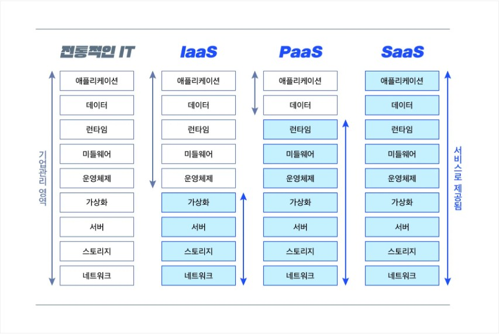

2week-1
- On-premise와 Off-premise
- 온프레미스(On-premise)란 소프트웨어 등 솔루션을 클라우드 같이 원격 환경이 아닌 자체적으로 보유한 전산실 서버에 직접 설치해 운영하는 방식을 말합니다.
온프레미스는 클라우드 컴퓨팅 기술이 나오기 전까지 기업 인프라 구축의 일반적인 방식이었기 때문에 이전 또는 전통적인 이라는 단어와 함께 사용됩니다.
일반적으로 온프레미스 시스템을 구축하는데 시간이 수개월 이상 걸렸고 비용 또한 많이 들어, 퍼블릭 클라우드가 나올 당시만 해도 온프레미스 환경이 금방이라도 모두 사라질 것 같았습니다.
하지만 보안 적인 이유로 비즈니스에 중요하고 보안이 필요한 서비스와 데이터는 온프레미스 환경에서, 덜 중요한 것은 퍼블릭 클라우드 환경을 사용하는 하이브리드 IT 인프라가 대세를 이루고 있습니다.
- 온프레미스 vs 오프프레미스
- Off-premises software (오프프레미스 소프트웨어)
-오프프레미스 소프트웨어는 일반적으로 SaaS 또는 클라우드 컴퓨팅이라고 한다.
전통적인 방식의 온프레미스 소프트웨어와는 다르게 인터넷 네트워크에 연결 된 서버팜이나 클라우드의 원격 실행환경에서 사용되는 소프트웨어이다.
- On-premises software (온프레미스 소프트웨어)
-온프레미스 소프트웨어는 인터넷 네트워크에 연결 된 서버팜이나 클라우드 등의 원격 환경에서 사용하는 것이 아니라
건물에서 일하는 직원 또는 단체에서 설치, 실행하는 소프트웨어를 말한다. on-prem software(온프렘 소프트웨어)
또는 on-premise software(온프레미스 소프트웨어)라고 줄여서 쓰기도 하며 shrinkwrap software라고 부르기도 한다.
온프레미스 접근방식은 2005년까지 기업 소프트웨어 사용의 일반적인 접근방식이었기 때문에 이전 또는 전통적인 이라는 단어와 함께 사용된다.
- IDC
- 호스팅은 서버를 가지고 있지 않은 분이 서버 내 하드디스크 공간을 임대하는 것이라면
IDC는 Internet Data Center의 약자로 서버 컴퓨터와 네트워크 회선 등을 제공하는 시설을 말합니다.
그러니깐 인터넷과 연결된 데이터가 보관된 서버를 모아둔 시설이라고 보면 됩니다. 단독서버가 좋을 수 있다고 생각할 수 있지만,
인터넷으로 서비스하기 위해서는 안정적으로 서버를 운영할 수 있는 시설 및 인원이 필요합니다.
서버에 문제가 있으면 인터넷 연결에도 문제가 생기기 때문에 정전되지 않도록 설계되어 있고,
서버 컴퓨터에서 방출하는 열기를 식히기 위한 대용량 냉각 장치 등 일정한 온도와
습도를 유지하기 위한 항온 항습 장치를 설치하여 운영하고 있습니다.
정부나 대기업은 자세 전산 설비를 운영하기 위한 별도의 IDC를 운영할 수 있지만
규모가 작은 기관 및 중소기업은 독자적인 IDC를 운영하기 힘들기에 서버만 사고 IDC의 일정 공간과 회선을 임대(코로케이션)해서 운영하기도 합니다.
IaaS, PaaS, SaaS
클라우드 서비스의 종류는 아래와 같이 크게 3가지로 나눌 수 있습니다.
- Infrastructure as a Service(IaaS, 아이아스, 이에스)서비스로 제공되는 인프라스트럭처입니다. 개발사에 제공되는 물리적 자원을 가상화합니다.
- Platform as a Service(PaaS, 파스)서비스로 제공되는 플랫폼입니다. 개발사에 제공되는 플랫폼을 가상화합니다.
- Software as a Service(SaaS, 사스)서비스로 제공되는 소프트웨어입니다. 고객에게 제공되는 소프트웨어를 가상화합니다.
클라우드 구분하여 알아보자.
- IaaS : 서비스로 제공하는 인프라스트럭처
클라우드 인프라스트럭처 서비스는 확장성이 높고 자동화된 컴퓨팅 리소스를 가상화하여 제공하는 것입니다.
- PaaS : 서비스로 제공하는 플랫폼
클라우드 플랫폼 서비스는 주로 응용 프로그램을 개발할 때 필요한 플랫폼을 제공하는 것입니다.
- SaaS : 서비스로 제공하는 소프트웨어
클라우드 애플리케이션(소프트웨어) 서비스는 사용자에게 제공되는 소프트웨어를 가상화하여 제공하는 것입니다.
SaaS는 타사 공급 업체가 관리하는 사용자에게 응용 프로그램을 제공하기 위해 인터넷을 사용합니다.
대부분의 SaaS 애플리케이션 웹 브라우저를 통해 직접 실행되므로 클라이언트 측에서 다운로드나 설치가 필요하지 않습니다.
무엇을 제공하는가

클라우드는 온라인의 광범위한 영역을 모두 다루는 광범위한 영역입니다. 클라우드 서비스들은 제공하는 범위에 따라 IaaS, PaaS, SaaS로 나뉘고 있으므로
각각의 클라우드 서비스가 제공하는 내역을 살펴보는 것은 클라우드를 이해하는 데 많은 도움이 됩니다.
- IaaS : 물리적 자원 제공
- PaaS : 소프트웨어 개발을 돕는 플랫폼 제공
- SaaS : 고객이 사용하는 소프트웨어 제공
rm -rf와 위험성
rm : 파일 삭제 명령이다.
-rf : recursive force의 약자로, 사용자가 지정한 위치 내의 모든 파일과 폴더를 강제로 삭제한다. 사용자에게 삭제 여부를 알려주지도 않고, 심지어 읽기 전용으로 표시된 쓰기 방지 파일도 삭제해 버린다.
/ : 삭제 위치를 지시하는 옵션으로, 루트 디렉토리를 의미한다.
따라서 이 명령어를 리눅스 시스템에서 입력하면, 그야말로 한 반에 모든 것을 삭제해 버리는 것이다.
이 때문에 최근에는 많은 리눅스 시스템이 이 명령어를 실행하기 전에 경고 메시지를 보여준다.
당연히 윈도우 10의 배시 환경에서 사람들이 제일 먼저 시험하고 싶어하는 명령어이다.
물론 가상머신 내에서나 시도할 것이다. 하지만 마이크로소프트가 윈도우에서 배시를 구현한 방식 때문에, 이 명령어가 사용자의 시스템을 날려버리지는 않는다.
마이크로소프트의 스콧 한셀먼이 트위터를 통해 설명한 바에 따르면, 윈도우의 루트 디렉토리와 리눅스의 루트 디렉토리는 같지 않다.
따라서 이 파괴적인 삭제 명령어는 아무런 피해를 입히지 않는다.
하지만 그렇다고 완전히 안전한 것은 아니다. 만약 사용자가 배시를 관리자 권한으로 실행해 ‘/Mnt/c’를 실행했다면,
윈도우를 망가뜨릴 가능성이 있다. 정리하자면, 배시의 기본 설정으로는 이 명령어가 아무런 해를 입히지 않겠지만,
정말로 윈도우를 망가 뜨리고 싶다면, 못할 것도 없다는 것이다.
grep
리눅스에서 grep 명령어는 특정 파일에서 지정한 문자열이나 정규표현식을 포함한 행을 출력해주는 명령어입니다.
특히 tail이나 ls 등 다양한 명령어와 조합하여 응용되는 경우가 많아서 이 grep명령어는 리눅스에서 능숙하게 사용할 줄 알아야 하는 기본 명령어입니다.
<리눅스 grep 사용법>
- 문자열로 찾기
# 특정 파일에서 'error' 문자열 찾기
grep 'error' 파일명
# 여러개의 파일에서 'error' 문자열 찾기
grep 'error' 파일명1 파일명2
# 현재 디렉토리내에 있는 모든 파일에서 'error' 문자열 찾기
grep 'error' *
# 특정 확장자를 가진 모든 파일에서 'error' 문자열 찾기
grep 'error' *.log
grep명령어를 사용하시면 특정 파일에서 내가 원하는 문자열이 있는 라인을 찾을 수 있습니다.
파일은 여러개 지정도 가능합니다. 위와 같이 사용한다면 'error'라는 문자열을 mylog.log라는 파일에서 찾을 수 있겠습니다.
- 정규표현식으로 찾기
# 특정 파일에서 문자열이 포함된 행을 찾는다.
grep '^[ab]' 파일명
# 특정 파일에서 a로 시작하는 모든 단어를 찾는다.
grep 'a*' 파일명
# 특정 파일에서 a로 시작하고 z로 끝나는 5자리 단어를 찾는다.
grep 'a...z' 파일명
# 특정 파일에서 a,b,c로 시작하는 단어를 모두 찾는다.
grep [a-c] 파일명
# 특정 파일에서 apple 또는 Apple로 시작하는 단어를 모두 찾는다.
grep [aA]pple 파일명
# 특정 파일에서 a나 b로 시작되는 모든 행을 찾는다.
grep '^[ab]' 파일명
# 특정 파일에서 apple로 시작되고 0나 9의 숫자로 끝나로 시작되는 모든 행을 찾는다.
grep 'apple'[0-9] 파일명
리눅스에서 grep은 정규표현식으로 특정 문자열을 찾을 수 있는 기능도 제공합니다.
은근히 응용할곳도 많고 자주 사용되니 알아두시면 좋습니다.
파일 사용자와 그룹
<리눅스 파일 및 경로 사용자, 그룹 변경 chown>
리눅스는 파일 및 경로에 소유자와 그룹 사용자를 지정할 수 있습니다.
이렇게 설정하는 이유는 적절한 접근 권한을 통해 허용 범위를 지정하기 위해서 입니다.
예를들어 읽기, 쓰기, 삭제 등 특정 목적에 따라 권한 부여를 위해 필요한 명령어 입니다.
그럼 아래는 어떻게 소유자 및 소유 그룹을 변경하고 그 예제를 살펴보도록 합니다.
- 소유자만 변경하는 경우
소유자 및 그룹 변경을 하려면 chown 명령어를 사용합니다.
- 그룹만 변경하기
이번에는 소유자 변경이 아닌 그룹의 변경이 필요한 경우 :을 사용합니다.
그룹명이 webgroup이라면 아래와 같이 그룹명 앞에 :을 추가하여 입력합니다.
- 사용자, 그룹 둘 다 변경하는 방법
소유자와 그룹 두 가지 모두를 변경할 경우입니다.
:을 사용하여 앞에는 chown webisfree:webgroup web.txt 와 같이
: 기호를 사용하여 소유자와 그룹 모두 변경하는 것이 가능합니다.
- 하위 디렉토리 포함 파일, 경로 사용자, 그룹 변경하기
현재 경로에서 하위 디렉토리 및 파일을 포함하여 변경하는 방법입니다.
이 경우 -R 옵션을 사용합니다. 만약 /test라는 폴더와 하위 모든 디렉토리 및 파일을 변경하기 위해서는
chown webisfree:webgroup -R test 로 입력합니다. 이제 모든 하위 요소를 포함하여 그룹 및 사용자 변경이 완료되었습니다.
netstat
전송 제어 프로토콜, 라우팅 테이블 등 수 많은 네트워크 인터페이스(네트워크 인터페이스 컨트롤러 또는 소프트웨어 정의 네트워크 인터페이스),
네트워크 프로토콜 통계를 위한 네트워크 연결을 보여주는 명령 줄 도구이다.
ufw
ufw는 iptables의 설정 도구로 복잡하지 않은 방화벽(Uncomplicated Firewall)을 말한다.
service
등록된 서비스를 기동/종료/재기동/상태조회를 할 수 있는 명령어이다.
branch
브랜치란 독립적으로 어떤 작업을 진행하기 위한 개념입니다.
필요에 의해 만들어지는 각각의 브랜치는 다른 브랜치의 영향을 받지 않기 때문에,
여러 작업을 동시에 진행할 수 있습니다.
stash
Git을 사용하다 보면 한 번쯤은 그럴 때가 있을 것이다. 우리가 주로 변경사항을 커밋할 때에는, 어떠한 기능이 완성되거나 완료되었을 때 주로 하기 때문에
지금 작업하고 있는 내용이 있는데, 다른 브랜치로 체크아웃 해야 할 때, 변경이 완료되지 않았을 때, 커밋하기는 애매한 상황이 되어버린다.
그렇다고 지금까지 변경한 내용을 커밋하지 않으면, 저장되지 않기 때문에 다시 작업해야만 한다. 이럴 때에 이용되는 것이 바로 stash다.
stash는 현재까지 Working Tree에서 작업한 내용을 커밋하지 않고, 별도의 저장소에 저장하는 명령어이다.
그러므로 stash 명령어를 실행하면, Working Tree가 HEAD의 위치로 돌아가 깨끗해진다. 이러한 점은 다른 브랜치에서 rebase를 실행하거나
병합 시 충돌 해결에도 요긴하게 이용될 수 있다. 예를 들어 마스터 브랜치에서의 변경 사항을 rebase 했는데, 현재 브랜치의 변경 사항과 충돌한다면,
지금까지의 변경 사항을 stash하여 저장한 뒤, rebase하여 충돌 지점을 수정한 뒤, 다시 stash에서 가져오면 병합하기에 쉬울 것이다.
merge
git branch를 다른 branch로 합치는 과정을 merge라 한다. merge의 기본 단위는 브랜치이며, git merge 명령어로는 커밋 단위로 합치기가 불가능하다.
가장 기본적인 merge는 바로 Fast Forward Merge이다. Fast Forward Merge는 현재 브랜치의 HEAD가 대상 브랜치의 HEAD까지로 옮기는 merge이다. Fast Forward Merge는 다음 명령어를 통해 가능하다.
git switch [현재 브랜치]
git merge [대상 브랜치]
conflict
conflict는 두 브랜치의 동일한 파일에 상반된 내용이 있다는 뜻입니다. 이럴 때는 Git이 두 가지 중에서
어떤 내용을 머지의 결과로 해야할지 모르기 때문에 사용자가 결정해줘야 하는데요.
그래서 Git이 conflict를 발생시키는 겁니다.
conflict가 발생했을 때 2가지 방법
- 첫 번째, 일단은 머지 작업을 취소하고 원래 상태로 돌아온다.
- 두 번째, conflict(충돌)를 해결하고 머지를 완료한다.
master 브랜치, premium 브랜치가 있고, master 브랜치 - A type commit | premium 브랜치 - B type commit
이렇게 서로 다른 커밋을 했습니다.
HEAD가 master를 가리키고 있어 저는 master 브랜치에 있는 건데요. 이 상태에서 git merge premium 커맨드를 실행해서 master 브랜치에 premium 브랜치를 머지하겠습니다.
실행했더니 아래 그림과 같이 conflict가 발생했습니다.
자, 이 상황에서 취할 수 있는 대응 방법 1번! 일단 머지를 취소하는 방법입니다. git merge —abort
두 번째 방법
conflict가 발생한 sample 파일을 Sublime Text라고 하는 텍스트 에디터로 열어봅니다.
지금 <<<<<<≤ HEAD 부터 ======= 까지가 master 브랜치가 가리키던 최신 커밋에서의 sample 파일의 내용이고,
======= 부터 >>>>>>> premium 까지가 premium 브랜치가 가리키던 최신 커밋에서의 sample 파일의 내용입니다.
여기서 할 수 있는 선택
- Good morning!을 선택(Good morning! 텍스트만 남기고 나머지 부분 다 삭제)
- Good Afternoon~을 선택(Good Afternoon~ 텍스트만 남기고 나머지 부분 다 삭제)
- 아예 충돌이 발생한 전체 부분 삭제하고 머지의 결과로 원하는 새로운 내용 입력
Jenkins
소프트웨어의 버전 충돌을 방지하기 위해 각자 작업한 내용을 공유 영역의 저장소에 지속적으로 업로드하여 CI (지속적인 통합)이 가능하도록 하는 도구
Git과 같은 버전관리 시스템과 연동하여 소스의 커밋을 감지하면 테스트가 포함된 빌드가 작동
ps와 kill
ps 명령어는 리눅스의 현재 실행중인 프로세스 목록과 상태를 보여주고, 윈도우의 작업관리자와 비슷하다.
kill은 프로세스에 시그널을 보내는 명령어로 kill 뒤에 시그널 번호(-9), 프로세스 ID로 프로세스를 강제 종료할 수 있다.
df와 du
- df : 리눅스 시스템 전체의(마운트 된) 디스크의 여유 공간 확인하고, 파일시스템, 디스크의 크기, 사용량, 남아있는 용량, 사용률, 마운트 지점 순으로 정보를 출력한다.
- du : 해당 파일 및 디렉토리의 디스크 크기를 확인하는 명령어입니다. 옵션이 없으면 현재 경로의 모든 파일 크기를 MB단위로 출력합니다.
chmod
파일, 디렉토리의 권한을 변경하는 명령어입니다.
chown
파일, 디렉토리의 사용자, 그룹을 변경할 수 있습니다. 쉽게말해 파일의 소유권을 변경하는 것입니다.